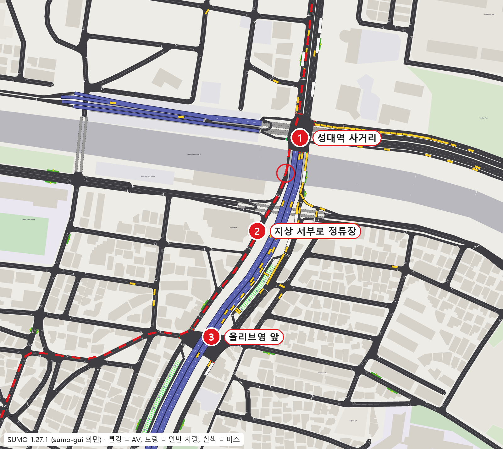

성균관대역에서
교내 주차장까지
실제 도로를 옮긴 SUMO 환경에서 신호와 양보 규칙을 지키며 2.8 km 경로를 완주하는 PPO 자율주행 정책을 학습했다.
완주율·충돌률·적색 신호 진입은 학습에 쓰지 않은 교통 시드 2000–2999의 1,000회 평가, 수집 데이터는 공개한 transition 10,003,156개다.
도로 환경과 차량 간 상호작용
서부로에서 골목과 회전교차로를 지나 율전로64번길, 일월로, 교내 도로로 이어진다. 경로에는 신호 교차로 5곳, 무신호 교차로 3곳, 회전교차로 1곳, 버스 정류장 2곳이 있다. 큰길·골목·회전교차로·교내 도로가 짧은 간격으로 바뀌어, 자율주행차가 경로 내내 멈출지 진입할지를 판단해야 한다는 점에서 이 도로를 골랐다.



배경 교통
승용차는 시간당 약 1,440대가 무작위로 출발·도착한다. 버스는 실제 17개 노선을 따라 정류장마다 20초씩 서고, 주차 차량은 주차장을 드나든다. 주요 판단 지점에 교통 흐름 12개를 설정하고 600초 동안 배경 교통을 생성한 뒤 자율주행차를 투입했다.
관측과 행동, PPO 학습
45차원 관측
자차 속도와 주변 차로 정보 등 기본 관측 31개에 신호, 교차로, 제한 속도, 앞차와 정지선 근접 정보 14개를 더했다. 정책은 −1에서 1 사이로 정규화한 값을 입력받는다.
0.5초마다 두 가지 출력
한 값은 가감속에, 다른 값은 오른쪽·유지·왼쪽 중 차로 행동을 고르는 데 쓴다. 차로 변경은 기본 안전 확인을 통과하면 실행된다. 정차, 차간거리 유지, 양보는 정책이 결정한다.
보상과 학습 조건
완주에는 +2점, 충돌에는 −5점, 적색 신호 진입에는 −30점, 양보 위반에는 −2점을 적용했다. 속도, 과속, 앞차·정지선과의 간격도 보상에 반영했다.
학습 시드 0–499와 출발 지점 12곳을 사용했다. PPO 정책은 256 × 256 ReLU 신경망을 사용하며, 2,048스텝마다 크기 128의 미니배치로 5회 반복해 갱신했다. 학습 조건 · 11장
문제 해결과 성능 개선 과정
문제 장면을 찾아 보상 계산으로 원인을 확인한 뒤, 관측이나 보상을 하나씩 바꿔 직전 모델에서 이어 학습했다.
| 단계 | 문제 | 해결 방법 | 평가 | 충돌률 · 완주율 |
|---|---|---|---|---|
| 11/17 신호 관측 추가 | 수업 기본 관측에는 신호가 없어 적색 신호를 그대로 통과했다. | 신호·교차 차량·제한 속도 관측 12개 추가, 신호 위반 −5, 과속 감점 | 20회 | 20% · 70% |
| 11/18 정차 보상 개선 | 정차 감점이 저속 스텝 대부분에 붙었고, 100회 중 회전교차로 진입 충돌이 9–15건이었다. | 막힘 감점 0.02, 정차 감점을 앞쪽 빈 공간에 비례하도록 변경 | 100회 | 13% · 82% (회전교차로 충돌 9–15건 → 0건) |
| 11/19 출발점 다양화 | 위험 교차로와 일월로 진입 장면을 학습에서 거의 겪지 못했다. | 위험 교차로 2곳과 일월로 앞을 출발점에 추가, 교통량 1.4배 섞기 | 1,000회 | 3.1% · 96.9% (적색 진입 21회) |
| 11/23 양보 목표 유지 | 무신호 좌회전 충돌 40건 중 18건: 앞 교차로 안에서 양보 목표가 꺼졌다. | 교차로 안에서도 다음 교차로의 양보 목표를 계산 | 1,000회 | 2.2% · 97.8% |
| 11/25 NW7 (최종) | 11/23 단계는 적색 정지선을 가상 정지 차량으로 보여 주는 관측을 썼고, 2차 컨설팅에서 금지되었다. 이 관측만 끄면 200회 중 적색 진입이 465회였다. | 적색 진입 −30, 적색 대기 중 '멀리 섬' 감점 0, 10만 스텝 이어 학습 | 1,000회 | 2.5% · 97.5% (적색 진입 0회) |
단계마다 평가 횟수와 환경 버전, 교통 시드가 다르다. 20·100회 결과는 오차가 크므로 같은 조건의 직접 성능 비교로 읽지 않는다. 1,000회 평가는 모두 교통 시드 2000–2999를 사용했다.
NW7을 최종 모델로 고른 이유
- 규정 준수: 금지된 가상 정지 차량 없이 신호·정지선 관측과 보상만으로 시드 2000–2999 1,000회에서 적색 진입 0회였다.
- 같은 조건 비교: 같은 시드 1,000회에서 11/19 모델은 충돌 3.1%, 적색 진입 21회, NW7은 2.5%, 0회였다. 충돌률의 95% 신뢰구간은 겹치며, 평균 완주 시간은 495초에서 513초로 늘었다.
- 체크포인트: 같은 설정으로 15만·22.5만·30만 스텝까지 학습하면 개발 시드 1000–1199에서 정지선 앞 정차 거리 중앙값이 7.3 m, 15.1 m, 28.2 m로 멀어졌다. 그래서 10만 스텝 모델을 채택했다.
- 다른 시드 확인: 시드 1000–1999 1,000회에서도 완주 97.6%, 충돌 2.4%, 적색 진입 0회였다.
NW7 최종 주행 성능
학습에 쓰지 않은 교통 시드 2000–2999에서 1,000회 평가했다. 975회 완주했고 충돌률은 목표인 5% 미만이었다.
| 평가 항목 | NW7 |
|---|---|
| 시간초과 | 0회 |
| 평균 주행속도 | 19.6 km/h |
| 평균 완주 시간 | 513초 |
| 정지선까지 거리 (중앙값) | 2.7 m |
| 정지한 앞차 뒤 간격 (중앙값) | 6.9 m |
| 다른 시드 1000–1999 (1,000회) | 완주 97.6% · 충돌 2.4% · 적색 진입 0회 |
시뮬레이션 안정성
평가 1,000회는 모두 도착 또는 충돌로 끝났고 시간초과는 0회였다. 순간이동은 평가와 별도로 시드 2004–2023 20회를 다시 돌려 SUMO 기록으로 셌다. 자율주행차의 순간이동은 0건이었다. 배경 차량은 20회 중 6회 주행에서 모두 9건이 있었다. 이는 300초 넘게 막힌 차량을 SUMO가 옮기는 기본 동작이다.
평가 결과 · 13장공개 주행 데이터
학습(시드 0–499)·평가(1000–2999)와 겹치지 않는 교통 시드 4000–13874에서 NW7을 결정적 정책으로 주행하며, 0.5초마다 한 행씩 기록했다. 5회 주행을 한 묶음으로 1,975개 묶음을 저장했다.
transition 수는 공개된 1,975개 묶음의 metadata.json을 합산한 값이다.
Observation과 State
observation은 정책이 실제로 받은 부분 관측 45개(−1~1)다. state는 시뮬레이터만 아는 전체 상태로, 정책 입력에는 쓰지 않는다. 둘을 함께 남겨 자율주행차가 본 정보와 실제 상황을 비교할 수 있게 했다.
| 필드 | 의미 · 단위 | 형식 |
|---|---|---|
episode, t | 주행 번호, 주행 안 스텝 번호 (1스텝 = 0.5초) | 정수 |
observation | 정책 입력: 자차 속도, 주변 차로 앞뒤 차, 다음 신호·교차로, 제한 속도, 앞차·정지선 근접도 | 실수 45개 |
action_raw, action.* | 정책 출력 [가감속, 차로 변경] (−1~1), 적용된 가감속 값, 차로 명령 −1/0/+1, 적용 여부 | 실수 2개 · 객체 |
reward | 해당 스텝의 보상 | 실수 |
terminated, truncated | 충돌·도착에 의한 종료, 1,200초 시간 제한에 의한 종료 | 참·거짓 |
state | 자차 위치(m)·속도(m/s)·가속도(m/s²)·방향(°)·차로·제한 속도, 다음 교차로 거리(m)·양보 여부, 주변 100 m 차량, 신호 6곳의 현시·연결별 신호·남은 시간(s), 교통 시드, 시뮬레이션 시각(s) | 객체 |
detected_vehicles | 관측 시점에 감지된 주변 차량의 위치(m), 상대 위치, 속도(m/s), 차종 | 목록 |
event.* | 충돌 여부, 도착 여부, 행동 전후 차로 | 참·거짓 · 정수 |
next_observation, next_state | 다음 스텝 값. JSONL에서는 용량을 줄이려고 마지막 스텝에만 쓰고, 나머지는 다음 행의 값을 쓴다. | 실수 45개 · 객체 |
transitions.jsonl.gz는 위 항목을 모두 담은 전체 기록이고, transitions.npz는 학습용 배열(observation, action_raw, lane_change, reward, next_observation, terminated, truncated, episode, t, detected_xy, detected_offsets)이다.
수업 필수 항목과 비교
수업 collect_pomdp_data.py의 기본 항목 19개와 NPZ 배열 11개가 모두 들어 있다. LMS 제출 표본의 첫 묶음(시드 4000–4004)에서 확인했다. 기본과 다른 점은 observation을 19개에서 45개로 늘린 것과, state에 교통 시드(sumo_seed)·신호 상태(traffic_signals)를 더한 것이다.
활용
- 모방학습: observation → action_raw
- 오프라인 강화학습: observation, action, reward, next_observation, 종료 여부
- 주행 행동 분석: state로 교차로별 정지 위치, 양보 시점, 신호 대기 확인
실행 방법
최종 모델 NW7과 평가 설정은 커밋 fc472d0에 있다. 3·4번 명령은 이 커밋을 새로 받은 폴더에서 실제로 실행해 확인했다. 5번 수집기는 공개 데이터를 만든 코드다.
1. 실행 환경
Windows, Python 3.10, SUMO 1.27.1에서 확인했다. SUMO는 설치할 때 SUMO_HOME을 설정하고, 패키지는 수업 안내대로 설치한다. 데이터 수집에는 libsumo가 더 필요하다.
python -m pip install torch gymnasium traci sumolib tensorboard
python -m pip install libsumo2. 저장소 준비
팀 저장소와 수업 저장소를 같은 상위 폴더에 받는다. 팀 코드가 옆 폴더의 수업 코드를 불러 쓴다. 다른 위치에 두면 환경 변수 COURSE_REPO에 수업 저장소 경로를 지정한다.
git clone https://github.com/a01023289522-cmd/autonomous-driving.git
git clone https://github.com/bmil-ssu/Artificial-Intelligence-and-Control-for-Autonomous-Driving.git
cd autonomous-driving
git switch --detach fc472d0c3552f16f9653cbf9d5b0c451fbe41bbc3. SUMO 화면으로 주행 보기
첫 실행은 시드마다 배경 교통 600초를 미리 만들어 저장하므로 몇 분 걸린다.
python -X utf8 rl/test_skku.py models/jaeseong_1125_nw7.pt --config js_nw7 --episodes 14. 화면 없이 정량 평가
python -X utf8 rl/quick_eval.py models/jaeseong_1125_nw7.pt --config js_nw7 --seeds 2000-2999 --procs 4
python -X utf8 rl/test_skku.py models/jaeseong_1125_nw7.pt --config js_nw7 --episodes 100 --noguiquick_eval.py는 도착·충돌 수, 적색 신호 진입, 정지선까지 거리, 평균 주행 시간을 출력한다. test_skku.py --nogui는 충돌률·완주율·시간초과율을 출력한다.
5. 주행 데이터 수집
수집기는 mingi/local-b 브랜치에 있다. 커밋 fc472d0의 환경과 모델을 꺼내 시드 4000부터 5회씩 묶어 저장하고, 중단해도 이어서 수집한다. 파일 잠금에 Windows 기능을 쓰므로 Windows에서 실행한다.
git switch mingi/local-b
python -X utf8 rl/collect_nw7.py --workers 2기본값은 transition 10,000,000개, 저장 위치는 data/nw7_10m이다. 수업 저장소가 사용자 폴더 바로 아래가 아니면 COURSE_REPO를 지정한다.
남은 과제
충돌 25건 중 15건이 무신호 좌회전에 집중됐다. 우선 차량이 접근할 때의 진입 판단과 정지한 앞차 뒤의 정차 간격을 더 개선할 필요가 있다.
교통량과 신호 주기는 가정값을 사용했다. 실측 교통과 다른 도로망에서 성능을 검증하고, 고밀도 교통에서 추가 학습·평가하는 것이 다음 과제다.
13조 팀원과 역할
| 팀원 | 담당 |
|---|---|
| 박준수 | SUMO 도로망 구축 · Hugging Face 데이터 공개 |
| 임수진 | 정문 신호·정지선 반복 평가 · 적색 진입과 정지 위치 평가 도구 |
| 임재성 | 보상·관측 설계 · NW7 학습 · 최종 모델 선정과 평가 · 주행 영상 |
| 최민기 | 모델 추가 학습과 정차 평가 · 프로젝트 웹페이지 제작 |